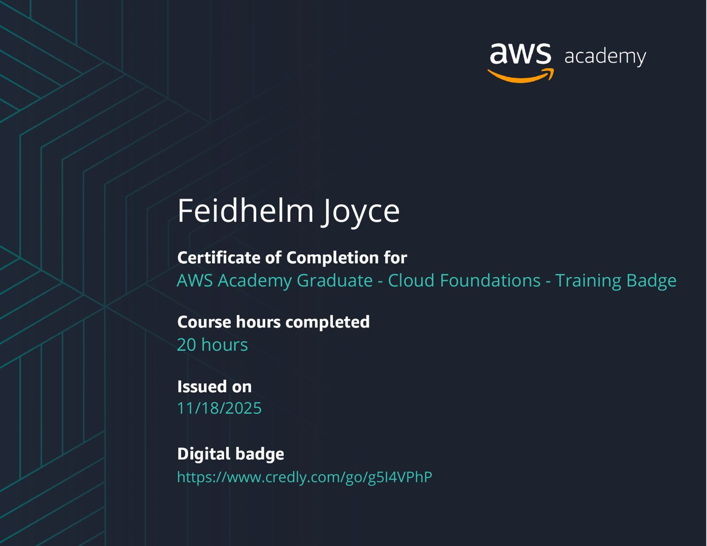

03 — ACADEMICS / CLOUD ANALYTICS
Cloud Analytics
Coursework from AD688, Cloud Analytics, at Boston University.
US Job Market – Analysing AI/Non-AI Job Postings
This was my final project for the Cloud Analytics course (AD688) at Boston University. This research was based on the US job market and the impact of AI/machine learning. The project was completed in collaboration with my classmates Bowen de Gouw & Mahnoor Khalid.
Please check out our website and research here: AD688 Job Market Analysis
Amazon Web Services (AWS) – Cloud Foundations ☁️
As part of this course, I completed the AWS Cloud Foundations course and received the AWS Cloud Foundations Certification. This certification validates my understanding of cloud computing concepts and AWS services, demonstrating my ability to work with cloud technologies effectively.
